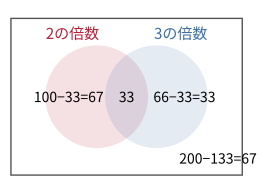

例題 1集合と命題 どちらでも割り切れない数の個数
1から200までの整数のうち、2でも3でも割り切れない数は何個あるか。
解き方（まず考え方）
全体から「2または3で割り切れる数」を引く。2の倍数と3の倍数を単純に足すと、両方に数えられた6の倍数が2回入るので、1回分を引く。
\[n(A\cup B)=n(A)+n(B)-n(A\cap B)\]コツ同じ人を2回数えたら、ダブりを1回分だけ引く。「どちらでもない」は、全体から「どちらか」を引く。
解答
STEP 1 集合を決める
全体 \(U=\{1,2,\dots,200\}\)（\(n(U)=200\)）。2の倍数の集合を \(A\)、3の倍数の集合を \(B\) とする。
STEP 2 それぞれの個数を数える
\(n(A)=200\div2=100\)。\(n(B)=\lfloor200\div3\rfloor=66\)（\(3\times66=198\leqq200\)）。
両方の倍数は6の倍数：\(n(A\cap B)=\lfloor200\div6\rfloor=33\)（\(6\times33=198\)）。

STEP 3 和集合の個数
\[n(A\cup B)=100+66-33=133\]
STEP 4 どちらでもない数
\[n(\overline{A}\cap\overline{B})=n(U)-n(A\cup B)=200-133=67\]
【答案（テストに書く形）】
\[67\ \text{個}\]答
練習問題 1
- 1から300までの整数のうち、3でも5でも割り切れない数は何個あるか。
- 1から150までの整数のうち、2でも5でも割り切れない数は何個あるか。
- 1から500までの整数のうち、4でも6でも割り切れない数は何個あるか。